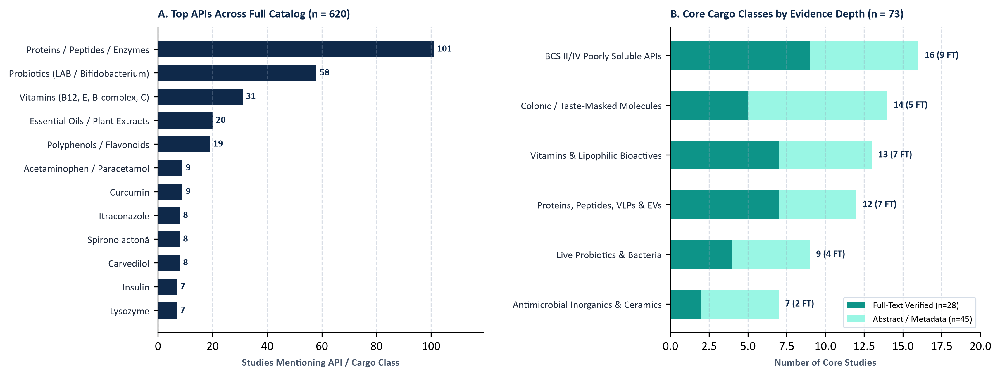
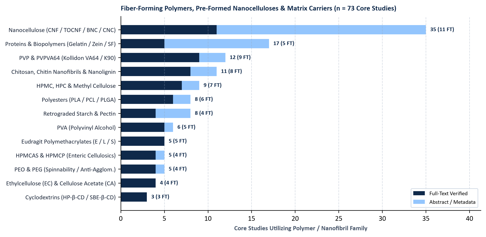
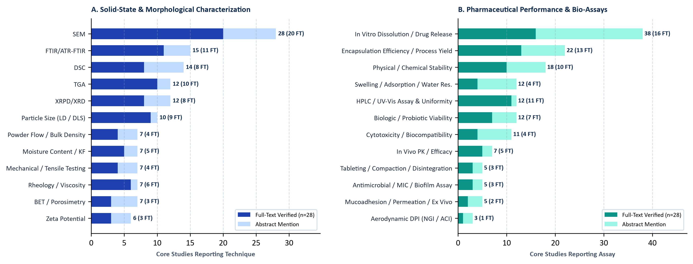

Evidence-based synthesis of suitable APIs, fiber-forming compounds, manufacturing techniques, and analytical methods across 620 curated studies and 73 Core studies (28 Full-Text Verified).
Download formatted Microsoft Word guides summarizing suitable APIs, fiber compounds, techniques, and methods, or explore the underlying Excel/CSV datasets and interactive tables.
Across the corpus, combining electrospinning (ES) and spray drying (SD) unlocks transformative bioavailability, thermal preservation, and targeted release across six therapeutic cargo classes:
| API / Cargo Class | Suitability | Optimal Route | Mechanism of Advantage | Proven Examples (Core IDs) |
|---|---|---|---|---|
| BCS Class II / IV Poorly Soluble Small Molecules | IDEAL (ASD) | Rotary/AC ES for ultrafast dissolution; 2-fluid SD for clinical high-dose ASDs | Sub-ms solidification prevents crystallization; HPMCAS/PVPVA64 stabilizes supersaturation | Itraconazole (010, 036, 007), spironolactone (058), ibuprofen (184, 085), carvedilol (007), furosemide (100), simvastatin (429), apalutamide, ivacaftor (072) |
| Proteins, Peptides, Enzymes, VLPs & EVs | IDEAL | Ambient ES (+ cryo-milling for DPI) or low-Tout 2-fluid SD + trehalose | Avoids >70 °C heat and ultrasonic cavitation shear; maintains ~88–100% bioactivity | Lysozyme (184, 234), α-chymotrypsin (089), RHDV/gp100 VLPs (130), BMP-2 (241), nisin Z (428), β-galactosidase (007) |
| Live Probiotics & Beneficial Bacteria | HIGH | Trilayer CA/PVA/CA ES, pre-SD shells → ES, or RS/pectin/CNF SD | Barrier shields live cells from organic solvents (ES) and lethal Tout >55 °C (SD) | L. plantarum (125, 211), L. acidophilus, Bifidobacterium (203, 229, 110), E. coli / M. luteus (098) |
| Colon-Targeted & Taste-Masked Drugs | HIGH | SD CNF/pectin or BNC carriers; Hybrid SD EC MPs inside ES HPMC/PEO ODFs | Neutral-pH BNC/pectin swelling & CNF barrier cut gastric burst; EC masks bitterness | 5-ASA (083, 229, 110, 217), 5-FU & 5-FU-curcumin (425, 450), rupatadine (133), cysteamine (134) |
| Labile Vitamins, Oils & Bioactives | HIGH | CNC/BCNF Pickering SD (oils) or EHD vs SD encapsulation | Surfactant-free Pickering shell + CNC H-bonding raises thermal Tmax (+43 °C for B12) | Vitamins B12 (438, 439), E (212, 235), B1/B2/C (039, 245), β-carotene (415), curcumin (432), oat oil (431) |
| Antimicrobial Inorganics & Bone Fillers | TARGETED | Coaxial ES scaffolds or CNC/chitin SD nano-in-micro carriers | Nanoscale dispersion prevents agglomeration while minimizing host cytotoxicity | Ag-Zn nanozeolites (152), Al2O3/ZnO NPs (395), hydroxyapatite HA1/HA2 (241), Ag + nanolignin (060) |

Candidate APIs can target either proven benchmarks (to validate solid-state baselines) or under-explored candidates matching the exact physicochemical traits proven optimal in the Core corpus (BCS II/IV solubility, low dose ≤50–100 mg, or thermal/enzymatic sensitivity) where 0 Core studies currently exist:
| Research Avenue | Benchmark vs. High-Novelty Candidate APIs | Recommended Route & Carrier | Key Analytical Opportunity | Lab Feasibility |
|---|---|---|---|---|
| 1. Oral BCS II/IV ASDs (Head-to-Head ES vs. SD) | Benchmarks: Itraconazole, spironolactone, simvastatin (036, 058, 429). Novel: Atorvastatin Ca, celecoxib, fenofibrate, meloxicam, felodipine, telmisartan. | Matched-throughput ES / electroblowing vs. B-290 2-fluid SD in HPMCAS / PVPVA64 / Eudragit E | Raman PCA/CLS spatial mapping + non-sink supersaturation + ICH Q3C GC | High |
| 2. Pediatric / Geriatric Taste-Masked ODFs (Hybrid SD-in-ES) | Benchmarks: Rupatadine (133), donepezil (085). Novel: Ondansetron HCl, desloratadine, levocetirizine, propranolol HCl, pediatric sildenafil. | Aqueous 2-fluid SD (Aquacoat ECD / Eudragit E PO) spun in aqueous HPMC/PEO or HPC/PVP ODFs | Solvent-free masking (<5% salivary burst pH 6.8) + improved ODF tear strength | High |
| 3. Colon-Targeted IBD & Synbiotics (Nanocellulose SD) | Benchmarks: 5-ASA (083, 106), 5-FU (403, 425). Novel: Budesonide, prednisolone, sulfasalazine, azathioprine, methotrexate (± L. rhamnosus GG). | B-290 DoE SD with 20–25% CNF + retrograded starch/pectin or BNC + granulation | Low-dose steroids (3–9 mg) fit high polymer ratios; SGF <10% → colonic SCF + flowability | High |
| 4. Inhalable Pulmonary DPIs (Biologics & Antibiotics) | Benchmarks: α-Chymotrypsin (089), lysozyme (184). Novel: Tobramycin, ciprofloxacin, colistin, budesonide, insulin, DNase I, bacteriophages. | Ambient ES (PVA/trehalose/leucine) + cryo-milling or cutting vs. low-Tout 2-fluid SD | NGI/ACI cascade impactor (MMAD 1–5 μm, FPF >30%) + bioactivity/phage titer | Medium |
| 5. Buccal / Sublingual Mucoadhesive (First-Pass Bypass) | Benchmarks: Furosemide (100), sumatriptan (085). Novel: Rizatriptan, zolmitriptan, carvedilol, propranolol, lidocaine, melatonin. | Aqueous ES (HPC:PVP 6:4, HPMC/chitosan/Carbopol) vs. SD mucoadhesive microspheres | Rapid low-dose (2.5–25 mg) onset; ex vivo porcine buccal Franz permeation & mucoadhesion | High |
| 6. Cold-Chain-Free Biologics, Peptides & Vaccines | Benchmarks: VLPs (130), EVs/bevacizumab (237), nisin Z (428). Novel: Lactoferrin, LL-37 peptides, Fab fragments, mRNA-LNPs. | Ambient ES (PVP K90 / PVA / HP-β-CD / trehalose) or B-90 HP Nano SD vs. SFD | 3–6 mo ambient stability (25 °C/60% RH), SEC-HPLC/CD integrity & ISO 10993 safety | Medium–Low |
| 7. Lipophilic Bioactives & Vitamins (Pickering SD) | Benchmarks: Vit E (212), Vit B12 (439), β-carotene (415), oat oil (431). Novel: Vitamin D3, coenzyme Q10, resveratrol, quercetin, omega-3 EPA/DHA, CBD. | Surfactant-free Pickering SD with CNC (0.4–0.8%) + MC/tannic acid or 0.2% BCNF | 40–85% loading without Tween/Span; peroxide/TBARS oxidation stability & redispersion | High |
| 8. Antimicrobial Wound Dressings & Scaffolds | Benchmarks: Tetracycline (119), nisin Z (428), Ag-Zn (152), BMP-2 (241). Novel: Mupirocin, levofloxacin, doxycycline, vancomycin, metronidazole, chlorhexidine. | Crosslinked 1% TOCNF SD microsponges, coaxial PCL/PLA–gelatin ES, or SD MPs on ES/BNC | Dual burst + sustained release, MRSA/EUCAST biofilm eradication & MTT safety | High–Medium |
The literature spans two distinct material paradigms: (A) Electrospinnable polymers that form continuous fibers in situ, and (B) Pre-formed natural/biosynthesized nanocellulose & protein fibrils consolidated via spray drying.

| Polymer Family | Verified Benchmarks |
|---|---|
| PVP / PVPVA64 | 40:60 SPIR:PVPVA64 in DCM/EtOH (058); 15% w/v PVP K90 in PBS (130); 15% HPC:PVP 6:4 (100) |
| PVA | 8% w/v EG-40P for α-Chy (089); 7% w/w core for L. plantarum (125); 5% BC:PVA in TFA (211) |
| HPMCAS / HPMCP | 1:9 to 9:1 IBU:HPMCAS/HP55 (184); clinical vemurafenib/HPMCAS-LF (072); ACES (323) |
| HPMC / HPC & PEO | 6.5% HPMC + 0.5% PEO 2M ODF (133); 0.03–4% PEO spinnability aid in ACES (007) |
| EC / CA & Polyesters | 6% Aquacoat ECD (133); 14% w/w CA barrier (125); 15–20% PLA / 20% PCL core (241) |
| Eudragit & Cyclodextrins | Eudragit E + itraconazole (036); 240–270 g/h aqueous HP-β-CD / SBE-β-CD (007) |
| Nanofibril / Additive | Verified Benchmarks |
|---|---|
| CNF / TOCNF / NFC | 1% w/v TOCNF (1.5 mmol COOH/g avoids B-290 clogging, 119); 25% CNF in RS/pectin (083) |
| BNC / BCNF | 0.5% w/v BNC + 91 mg/g B12 (439); 0.2% BCNF Pickering VE (212); 1:1 5-FU-curcumin (425) |
| CNC / cCNC & Chitin | 0.06 g CNC/g oat oil (431); 8% NCC/lactose 25:75 (429); 0.5% cCNC+SF (441); 2:1 CN:NL + PEG (060) |
| Amyloid Fibrils (ANF) | ~1 vol% ANF per 10 nm particle size triggers crumpled supraparticles in SD (411, 142) |
| Crosslinkers & Aids | 1:1 bPEI + citric acid (119), 0.31% tannic acid (431), DHT gelatin (428), MeOH β-sheet (441) |
| Solvents & Warnings | Prefer H2O / PBS / Aquacoat; monitor DCM/CHCl3/DMF (ICH Q3C); avoid Surelease in ES (133) |
Comprehensive experimental characterization and validated Design of Experiments (DoE) operating windows across the 28 Full-Text Verified Core studies:

| Method Stage | Proven Protocols & Quantitative Benchmarks | Reference Core IDs |
|---|---|---|
| Upstream Feed Prep | Rheology/G''-G' crossover & conductivity check; Ultra-Turrax + 300-bar homogenization (253.9 nm O/W); probe sonication; 16-day starch retrogradation; 1% TOCNF (1.5 mmol/g) | 100, 323, 429, 431, 083, 119 |
| ES Operating Windows | 10–40 kV DC (or ACES), 0.1–1.3 mL/h single needle (300–1,200 mL/h rotary/C-ACES), 10–25 cm distance, 20–25 °C ambient → 90–1,270 nm fibers | 058, 089, 100, 125, 130, 133, 241, 007 |
| SD Operating Windows & DoE | B-290 / B-191 / B-90 HP: Tin 85–210 °C (25 °C rotary DCM/EtOH), Tout 70–120 °C; 18-to-46-run DoEs (R2=0.71–0.80); yields up to 82%, EE up to 88–95% | 058, 083, 119, 133, 184, 212, 428, 429, 431, 439, 441 |
| Downstream Processing | Cryo-milling / mechanical cutting for DPI; DHT crosslinking (140 °C/48 h, 53.2%); <1 s methanol Silk II β-sheet induction; vacuum drying + compaction | 089, 190, 428, 441, 072 |